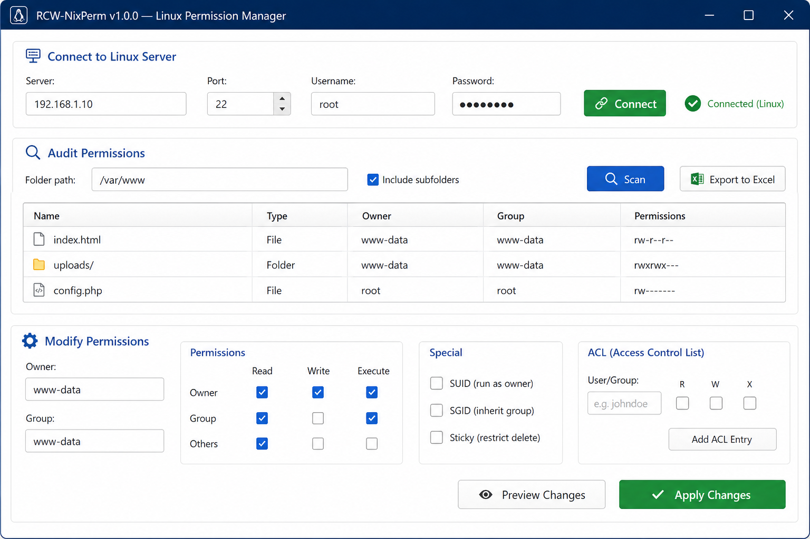

Complete GUI Permission Manager
Everything is managed through visual controls — checkboxes, text fields, and buttons. No commands to type, no syntax to memorize.
- ✓Visual permission checkboxes (R/W/X)
- ✓Owner & group text fields
- ✓SUID, SGID, Sticky checkboxes
- ✓ACL user + R/W/X checkboxes
- ✓Sortable file & folder table
- ✓Click any file to load its permissions
- ✓Export audit to Excel (.xlsx)
- ✓Preview changes before applying
- ✓Apply to subfolders checkbox
- ✓Auto-refresh after changes
🖥️ What the GUI Looks Like
🔌 Connect to Linux Server
Server:192.168.1.10Port:22Username:rootPassword:••••••••🔗 Connect✓ Connected (Linux)
📊 Audit Permissions
Folder path:/var/www Include subfolders🔍 Scan📄 Export to Excel
📁 Files and Folders
| Name | Type | Owner | Group | Permissions |
|---|---|---|---|---|
| index.html | File | www-data | www-data | rw-r--r-- |
| uploads/ | Folder | www-data | www-data | rwxrwx--- |
| config.php | File | root | root | rw------- |
| logs/ | Folder | syslog | adm | rwxr-x--- |
✏️ Modify Permissions (click any file above)
Owner:www-dataGroup:www-data
| Owner: | Read | Write | Execute |
| Group: | Read | Write | Execute |
| Others: | Read | Write | Execute |
Special: SUID (run as owner) SGID (inherit group) Sticky (restrict delete)
ACL User:john R W X
Apply to subfolders👁️ Preview Changes✅ Apply Changes
How it works
- Install nothing — copy the exe to any Windows 10/11 machine and double-click. The target server just needs SSH and a sudo-capable user (or root).
- Connect: enter the server address, port, username and password. Click the Connect button — you will see a green “Connected” status.
- Audit: enter any folder path (e.g.
/var/www,/home,/etc), check Include subfolders for a full tree scan, and click Scan. Every file and folder appears in the table with owner, group, and visual permission display. - Export: click Export to Excel to save the full audit as an .xlsx workbook with highlighted security findings.
- Modify: click any file in the table — its current permissions load into the checkboxes. Change the owner, group, tick or untick the Read/Write/Execute boxes, enable SUID/SGID/Sticky, add ACL users, then click Preview Changes to review, and Apply Changes to execute.
100% GUI: You never type a command. All operations use checkboxes, text fields and buttons. The tool handles all the Linux communication behind the scenes. Always test permission changes on non-production systems first.